Eraser || ايرايسر
الاسم: ايرايسر
المهمة: حذف البيانات والمعلومات الموجودة في نظام التشغيل بشكل آمن
أنظمة التشغيل التي يعمل عليها: ويندوز
الثمن: مجاني
كيف يعمل؟
يقوم بحذف أيقونة الملف/المجلد وتشويه البيانات بشكل معقد حيث يصعب من إمكانية استرجاعها عن طريق أي
برنامج
ما هو الفرق بين المجلد والملف؟
الملف: هو مكان لتخزين البيانات، مثل: ملف وورد، ملف جداول اكسل، صورة، أو أغنية
المجلد: هو مكان لتخزين الملفات، يمكن للمجلد أن يحتوي ملفات مختلفة، يمكن تشبيه الملف أو الملفات بـ الكتب | وتشبيه المجلد بـ المكتبة
ما الفرق بين الحذف العادي والحذف عن طريق ايرايسر؟
عندما يتم حذف أي ملف بشكل عادي يقوم نظام التشغيل بحذف أيقونة الملف من واجهة المستخدم، بمعنى تقني: يقوم بحذف مؤشر/رابط أيقونة الملف/المجلد مع مكان تواجده على القرص الصلب
يقوم ايرايسر بحذف أيقونة الملف/المجلد وتشويه البيانات بشكل معقد حيث يصعب من إمكانية استرجاعها عن طريق أي برنامج، تتم عملية تشويه البيانات من خلال كتابة بيانات وهمية عدة مرات فوق البيانات المراد حذفها ينصح بتحديد خوارزمية الكتابة 7 مرات أقل شيء للوصول لنسبة تشويه مقبولة
الحذف الآمن
-
ما هي الطريقة لحذف ملف أو مجلد من جهاز الكمبيوتر أو من وحدة التخزين (فلاش ميموري)؟
- حذف (ديليت)
- Shift + Delete
- النقل إلى سلة المحذوفات، ثم إفراغ سلة المحذوفات
-
ما هي الطريقة لحذف كافة الملفات والمجلدات من جهاز الكمبيوتر أو وحدة التخزين (فلاش ميموري)؟
- فرمتة الجهاز أو وحدة التخزين Format
ولكن!
هل الحذف بالطرق السابقة، يعني أن الملف أو المجلد الذي قمنا بحذفه، لا يمكن استرجاعه؟ الجواب: لا!.. فإن الملفات والمجلدات التي يتم حذفها بالطرق السابقة، قابلة للاسترجاع! حيث يمكن استرجاع ملفات ومجلدات من جهاز الكمبيوتر أو وحدة التخزين بعد أشهر وسنوات من حذفها، ويمكن استرجاع الملفات والمجلدات من جهاز الكمبيوتر أو وحدة التخزين بعد عدة مرات من الفورمات
استرجاع ملفات حُذفت بشكل عادي!
عملية استرجاع أو استعادة الملفات المحذوفة من الكمبيوتر أو وحدة التخزين، يمكن أن تتم عبر برامج بسيطة ومجانية ومتوفر، لذلك، فإن جميع خيارات الحذف السابقة أو الشائعة (ديليت - شيفت + ديليت -النقل إلى سلة المحذوفات - إفراغ سلة المحذوفات - فرمتة الجهاز) هي عمليات حذف غير آمنة
سؤال!
هل يوجد طريقة لحذف الملفات والمجلدات من جهاز الكمبيوتر أو وسائط التخزين بطريقة آمنة، وغير قابلة للاستعادة؟ الجواب: نعم يوجد تطبيقات تقوم بحذف الملفات والمجلدات من جهاز الكمبيوتر ووسائط التخزين بطريقة آمنة ، وسيتم في الفقرة التالية، شرح كيفية تنصيب وإعداد تطبيق ERASER للحذف الآمن
يتكون هذا الدليل من ثلاثة أقسام رئيسية :
1- تنصيب برنامج فيرا كريبت
- الحصول على التطبيق:
- نضغط على المربع بجانب عبارة "I accept the license" لتظهر اشارة [㇢]
- نضغط على "Next"
-
نختار "Install"
-
نضغط على "Next"
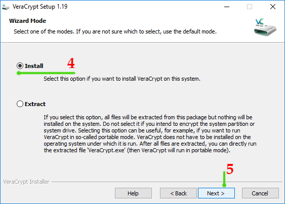
بعدها تبدأ عملية التنصيب
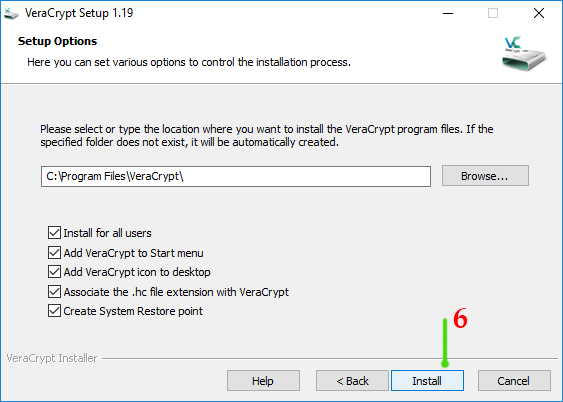 -
نضغط على خيار "Install"

-
عند الإنتهاء، تظهر الرسالة التالية، وتعني بأنه تم تنصيب البرنامج
نضغط على "OK"
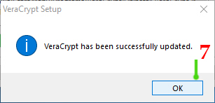
بعد الإنتهاء من تنصيب البرنامج، تظهر الرسالة التالية
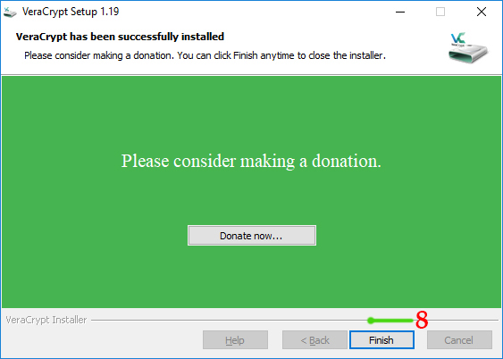
الخيار "Donate now" هو للتبرع للقائمات والقائمين على إعداد التطبيق
- نضغط على خيار "Finish" ﻹنهاء الإعداد
2- إنشاء حافظة\مجلد مشفر
-
بعد اكتمال تنصيب البرنامج على جهاز الكمبيوتر،
نقوم بتشغيل البرنامج، عادةً يكون اختصار البرنامج موجود على سطح المكتب، أو ضمن قائمة "ابدأ" لأجهزة
ويندوز أو قائمة
البرامج لأجهزة ماك
-
نضغط على خيار "Create Volume" لـ :
- إنشاء مجلد مشفر
- تشفير أحد الأقراص الداخلية في الجهاز أو وسائط التخزين الخارجية
- تشفير نظام التشغيل
صفحة VeraCrypt Volume Creation Wizard - الخيار الأول: إنشاء حافظة\مجلد مشفر
- الخيار الثاني: تشفير Flash memory أو تشفير أحد الأقراص في جهاز الكمبيوتر "عدا القرص الذي يحوي نظام التشغيل"
- الخيار الثالث: تشفير نظام التشغيل بشكل كامل
- نختار الخيار الأول "Create an encrypted file container"
- نضغط على خيار "Next" صفحة Volume Type
- الأول: إنشاء مجلد مشفر
- الثاني: إنشاء مجلد مشفر مخفي
- نختار "Standard veraCrypt volume"
- نضغط على خيار "Next" صفحة Volume Location
- نضغط على "Select File" نحدد المكان الذي نريد إنشاء المجلد فيه (سطح المكتب أو أي مكان آخر)
- في حقل "File name" نكتب اسم المجلد التي نريد انشائه
- نضغط على خيار "Save"
- نضغط على خيار "Next"
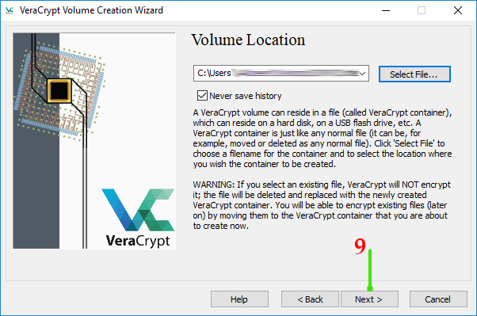
صفحة Encryption Options - نختار الخوارزمية التي نريدها، يمكن اختيار أي خوارزمية
- نضغط على خيار "Next" صفحة Volume Size
- نكتب قيمة الحجم
بعد إنشاء المجلد المشفر، لا يمكن تغيير حجمه - نختار مقياس الحجم: كيلو بايت - ميغا بايت - غيغا بايت - تيرا بايت
- كل 1000 كيلو بايت = 1 ميغا بايت
- كل 1000 ميغا بايت = 1 غيغا بايت
- كل 1000 غيغا بايت = 1 تيرا بايت
- نضغط على "Next" صفحة Volume Password
- ضمن خانة "Password" نضع كلمة السر التي نريدها
- ضمن خانة "Confirm" نقوم بإعادة كتابة كلمة السر مرة اُخرى يجب عدم نسيان أو فقدان كلمة السر، ﻷنه لا يوجد طريقة ﻹستعادة أو اعادة تعيين كلمة السر في حال فقدانها يمكن تغيير كلمة السر لاحقاً "بشرط وجود كلمة السر الحالية"
- بعد ادخال كلمة السر، نضغط على الخيار "Next"
- عند إدخال كلمة سر أقل من 20 خانة، ستظهر الرسالة التالية، نضغط على خيار "Yes"
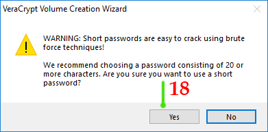
صفحة Volume Format - نضغط على خيار "Format" عند الإنتهاء من عملية التهيئة، تظهر الرسالة التالية، وتعني أن عملية إنشاء المجلد المشفر تمت بنجاح
- نضغط على خيار "OK"
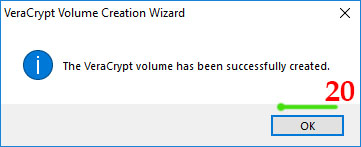
يختلف الوقت الذي يستغرقه البرنامج بالتهيئة بحسب حجم المجلد الذي اخترناه (كلما زاد حجم المجلد، كلما
زاد وقت التهيئة، كما
يتعلق الأمر بمواصفات الجهاز الذي نعمل عليه) - عند عدم الرغبة بإنشاء مجلد جديدة، نضغط على خيار "Exit" هكذا، نكون قد انشأنا مجلد مشفر، يمكننا استخدامه لحفظ كافة الملفات والمجلدات التي نريد تشفيرها
بعد تشغيل البرنامج، تظهر النافذة التالية
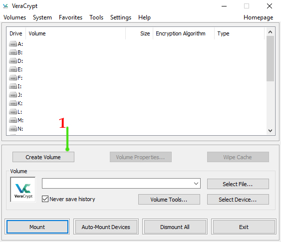
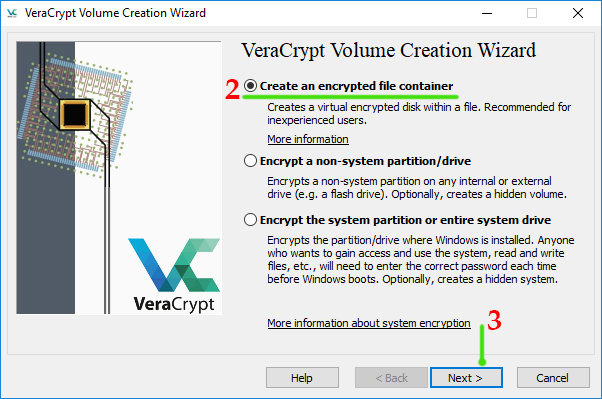
تحديد نوعية المجلد التي نريد انشائه
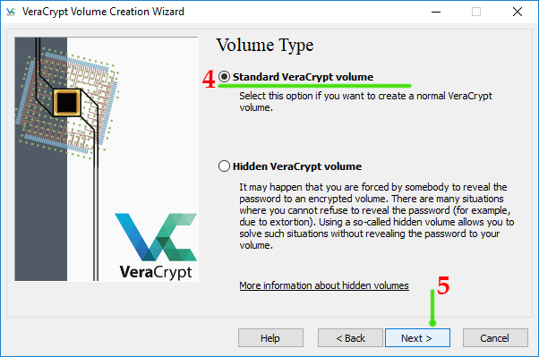
يوجد خياران:
تحديد المكان الذي نريد إنشاء المجلد فيه
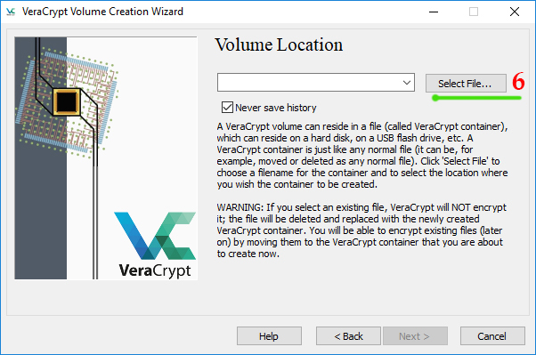
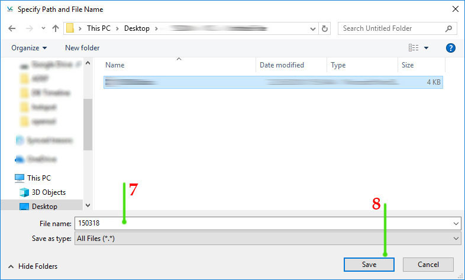
تحديد خوارزمية التشفير التي نريد استخدامها
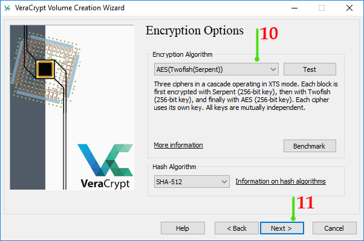
تحديد حجم المجلد التي نريد انشائه
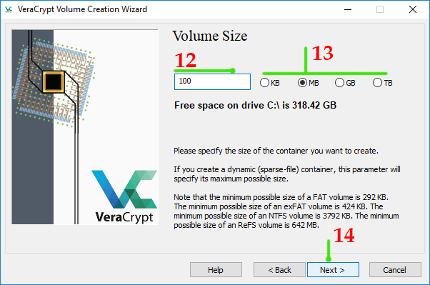
إنشاء كلمة سر للمجلد المشفر
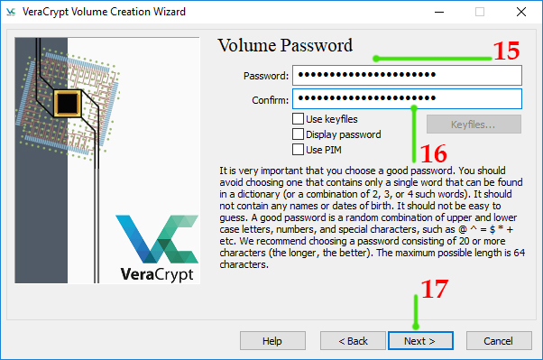
تهيئة المجلد المشفر
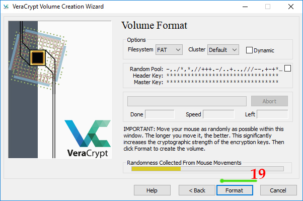
صفحة Volume Create
إنشاء مجلد جديدة مشفر
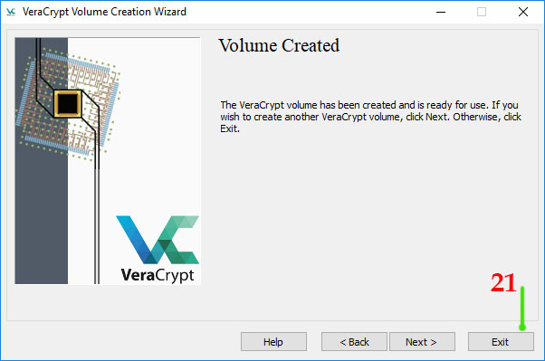
عند الرغبة بإنشاء مجلد مشفر جديد، نضغط على خيار "Next"، ونتابع الخطوات السابقة.
3- تشفير الملفات والمجلدات
-
بعد الإنتهاء من إنشاء مجلد مشفر، أو عند تشغيل برنامج "فيرا كريبت" من جديد، تظهر النافذة التالية:
- نضغط على خيار "Select File" نذهب إلى مكان وجود المجلد
- نحدد المجلد الذي أنشأناه
- نضغط على خيار "Open" بعد تحديد المجلد، سنقوم بتحديد اسم المجلد أو اسم القرص الذي ستفتح به
- نحدد أي حرف من القائمة الموجودة
- نضغط على خيار "Mount" يتم طلب كلمة السر
- في حقل "Password" نضع كلمة السر الخاصة بالمجلد
- نضغط على خيار "OK" ننتظر قليلاً ليتم فتح المجلد
- نحدد اسم المجلد
- ضغط على الخيار "Dismount"
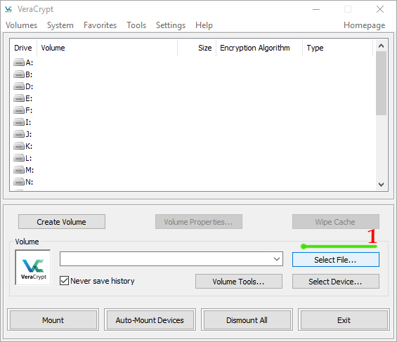
بالبداية يجب أن نقوم بفتح المجلد المشفر الذي انشأناه
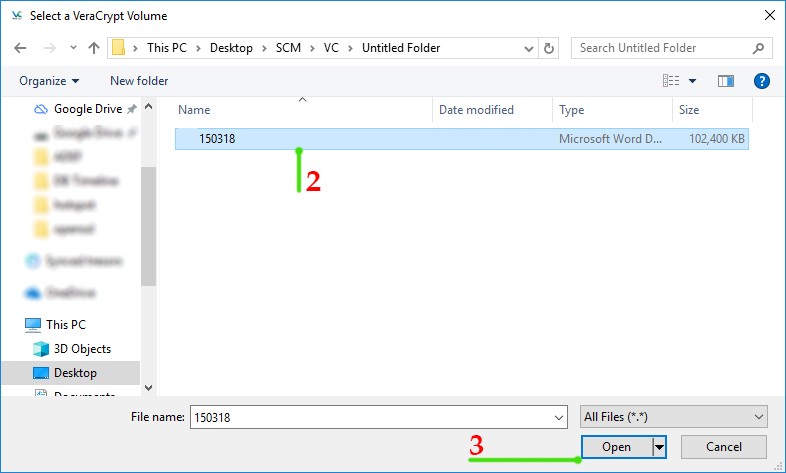
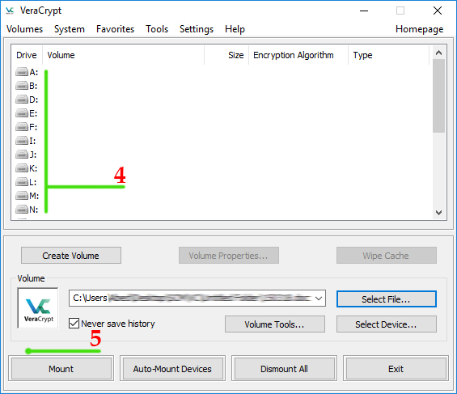
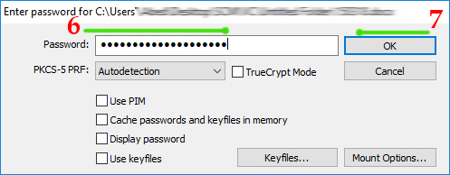
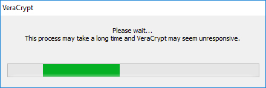
داخل "جهاز الكمبيوتر" نجد المجلد الذي انشأناه في هذا المثال، المجلد اسمه "M"

عند الضغط على المجلد داخل جهاز الكمبيوتر، يفتح كما في الصورة التالية
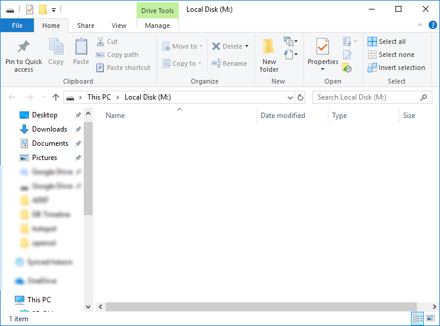
الآن، بعد إنشاء وفتح المجلد المشفر، يمكننا استخدامه عن طريق وضع كافة الملفات والمجلدات التي نريد تشفيرها وحمايتها بداخله
جميع الملفات والمجلدات التي توضع داخل المجلد، تكون مشفرة ومحمية
بعد الإنتهاء من العمل على المجلد، وعندما نريد إغلاقه، نعود للصفحة الرئيسية لبرنامج "فيرا كريبت"
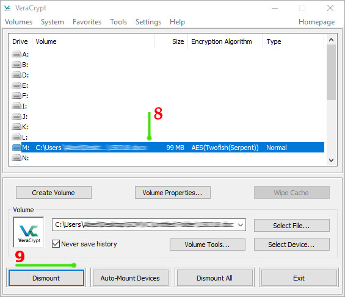